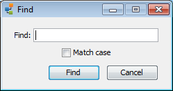
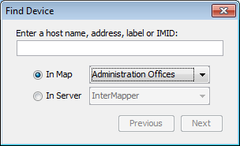

| Menu Command | Description |
|
|
|
| Redo |
|
| Revert... |
(Map Window only) Restores the state of the map as it was when you last opened it for editing. |
| Cut |
Cut the selected items to the clipboard. |
| Copy |
Copy the selected items to the clipboard. |
| Paste |
Paste the contents of the clipboard to the current window. |
| Delete |
Removes the selected items from the map. |
|
Choose from a variety of commands to select objects in a variety of ways. (Map Window only) |
|
|
|
|
| Find (submenu) |
|
|
|
|
| Server
Settings... |
|
|
Note: On Macintosh, this command is available from the InterMapper or IM RemoteAccess menu. |
Reverses the previous operation. Most operations in InterMapper can be undone. Undo is multiple levels.
Re-performs the previous undo operation. Any operation that has been undone can be redone.
Note:
Restores the state of the current map to its last state when it was last enabled for editing.
Cuts the selected items to the clipboard.
Copies the selected items to the clipboard.
Pastes the contents of the clipboard to the current window.
Removes the selected items from the current window.
Choose any of these options from the Select submenu.
(Map List Window) Selects all maps and servers.

The Find window
Find the first object containing the specified text in the current map. The device is highlighted when it is found.
Finds the next item in the current map that matches the previously specified text string.

The Find Device window
Find the a device on the specified map or server. You can enter a host name, address, or IMID. This could be useful to help you determine, for example, the device from which a dataset in the database came.
Use the Map Settings... command to view and edit an individual map's color
settings, specify a background image, and view and edit the list of default
notifiers for the map. See Map
Settings
Use the Preferences... command to open the Preferences window to set preferences for the InterMapper client application or for InterMapper RemoteAccess. These settings affect only the copy of the application you are running.